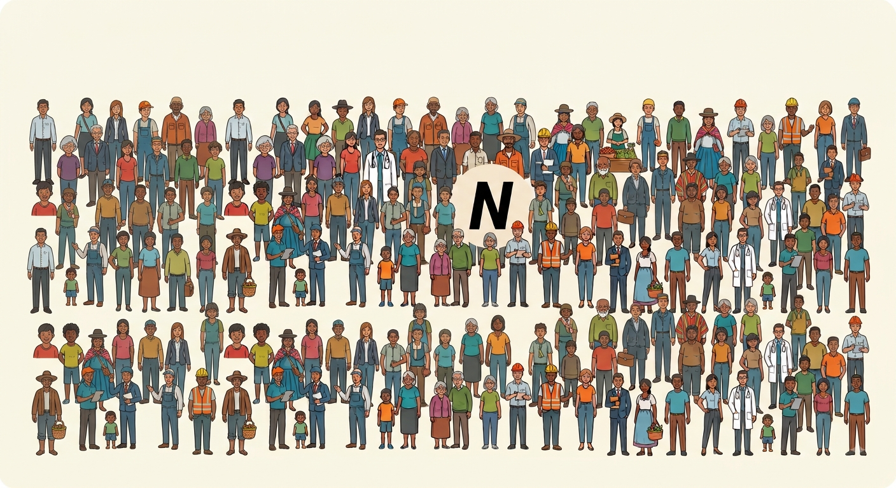
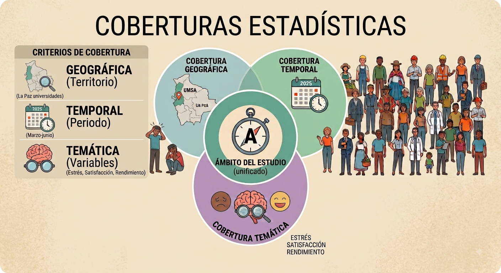
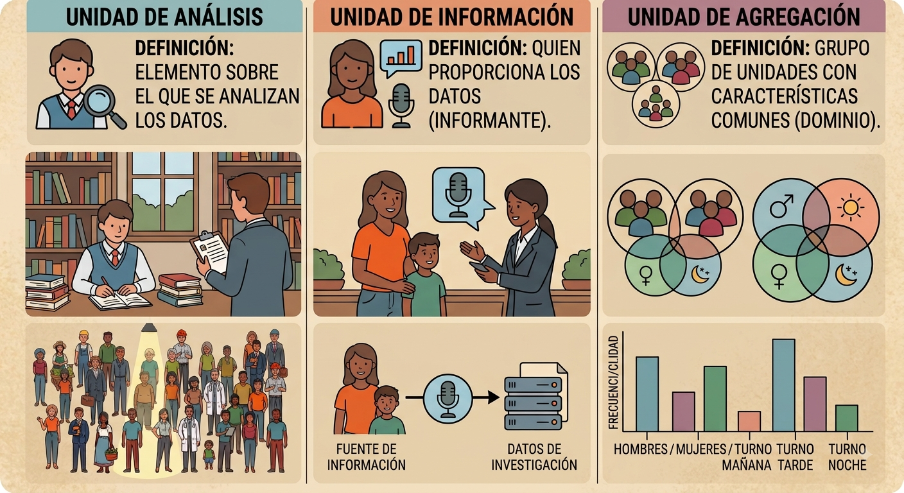
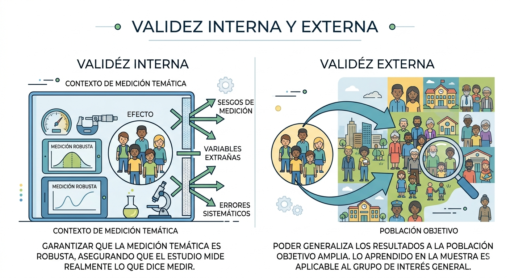
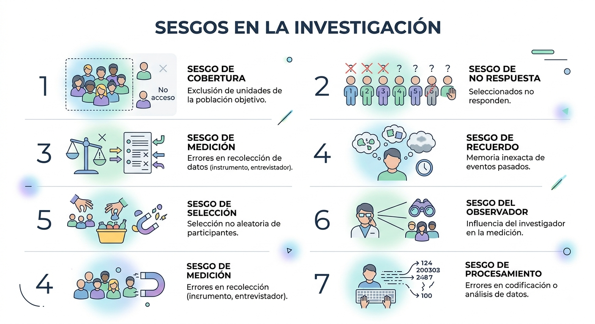
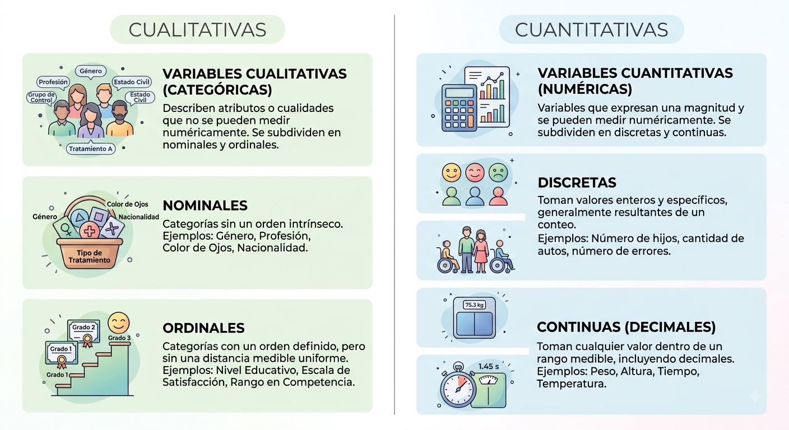
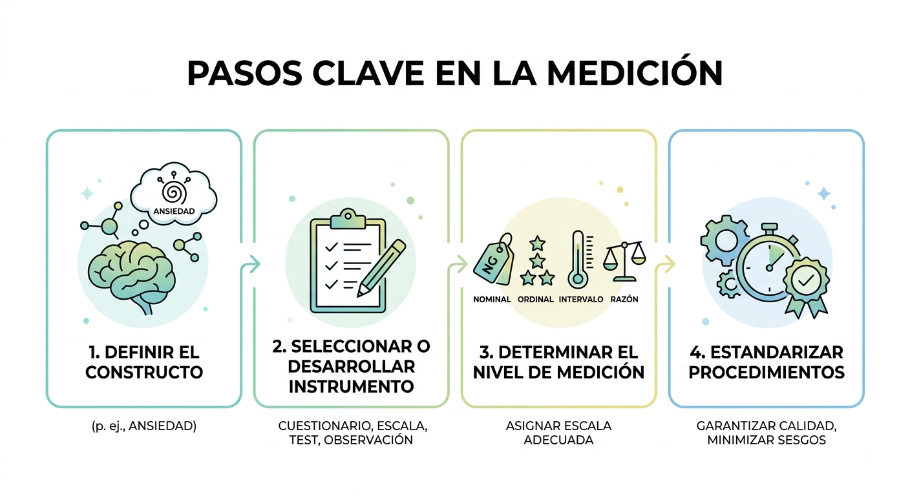

1 Diseño estadístico
1.1 ¿Qué es la estadística?
La estadística ha sido definida de distintas maneras según el enfoque y el contexto de aplicación:
- Enfoque formal: la estadística es la ciencia que trata con la recolección, análisis, interpretación y presentación de datos (Wackerly et al. 2008).
- Enfoque aplicado: conjunto de métodos para planificar estudios, obtener datos y analizarlos con el propósito de tomar decisiones y resolver problemas (Montgomery and Runger 2014).
- Enfoque comunicativo: el arte de contar una historia con datos, enfatizando la comunicación clara y contextualizada de resultados (Gelman and Nolan 2017).
Ejemplo: Analizar datos de un cuestionario de bienestar psicológico para comparar niveles de estrés entre grupos (p. ej., por semestre o género) y comunicar hallazgos que orienten intervenciones.
En parejas, busquen una noticia o dato estadístico reciente que hayan visto en redes sociales o medios. Identifiquen cuál de los tres enfoques predomina en esa información: formal (recolección/análisis), aplicado (toma de decisiones) o comunicativo (arte de contar una historia). Compartan por qué creen que se eligió ese enfoque para el público general.
1.2 Población Objetivo (PO) — Universo
Definición:
\[ U=\{u_1, u_2, \ldots, u_N\} \]
Donde \(N\) es el tamaño del universo o la PO. Es el conjunto total de elementos o individuos sobre los que se quiere obtener información.
Ejemplo: Todos los estudiantes matriculados en Psicología en Bolivia en 2025.

Imaginen que desean investigar el nivel de motivación en la carrera de Psicología. Definan con precisión la Población Objetivo (U) para este estudio en el contexto de la Universidad Católica Boliviana. Asegúrense de que el conjunto sea total y no deje dudas sobre quiénes forman parte de él.
1.3 Coberturas estadísticas
- Cobertura geográfica (¿dónde?): territorio o ámbito institucional del estudio.
Ejemplo: Universidades de La Paz. - Cobertura temporal (¿cuándo?): periodo de referencia.
Ejemplo: Marzo–junio de 2025. - Cobertura temática (¿qué?): variables o fenómenos a medir.
Ejemplo: Estrés académico, satisfacción con la carrera y rendimiento.

Para el estudio de “Motivación en Psicología” definido anteriormente, redacten en una hoja:
- Cobertura geográfica: ¿En qué sedes o campus?
- Cobertura temporal: ¿Qué meses del año 2025 o 2026?
- Cobertura temática: ¿Qué variables específicas medirán (ej. horas de sueño, promedio académico, interés por la clínica)?.
1.4 Unidades estadísticas
- Unidad de análisis/investigación: elemento sobre el que se analizan los datos.
Ejemplo: Un estudiante. - Unidad de información: quien proporciona los datos (puede coincidir o no con la unidad de análisis).
Ejemplo: Un padre/madre como informante sobre hábitos de sueño de su hijo. - Unidad agregada (dominio): grupo de unidades con características comunes para análisis comparativo.
Ejemplo: Semestres, género, tipo de turno (mañana/tarde/noche).

En el siguiente caso: “Se entrevista a los directores de colegios de La Paz para analizar el rendimiento académico de los estudiantes de primaria”, identifiquen:
- La Unidad de análisis.
- La Unidad de información.
- Una posible Unidad agregada (dominio).
1.5 Fuentes de información
- Censo: recuento completo de la población objetivo.
Ejemplo: Censo de población y vivienda para estimar la distribución etaria. - Encuesta por muestreo: medición de una parte de la población seleccionada mediante técnicas probabilísticas.
Ejemplo: Encuesta nacional de salud mental en estudiantes. - Estudio experimental: recolección de datos bajo condiciones controladas para probar hipótesis y estimar efectos.
Ejemplo: Ensayo controlado sobre el impacto de mindfulness en ansiedad. - Estudio observacional: registro sistemático sin manipulación de variables, en contextos naturales.
Ejemplo: Observación del uso de redes sociales y su asociación con bienestar. - Registro administrativo: datos reunidos por instituciones en el curso de sus funciones.
Ejemplo: Historias clínicas o registros de atención psicológica.
Nota: Estos pueden ser de fuente primaria (se es parte de la recolección) o secundaria (se recurre a datos ya existentes en algún lado)
Propongan qué fuente de información sería la más adecuada para los siguientes objetivos y justifiquen su elección:
- Conocer cuántos psicólogos hay en todo Bolivia.
- Saber si una nueva técnica de relajación reduce el ritmo cardíaco en tiempo real.
- Analizar la evolución de diagnósticos de depresión en un hospital público durante los últimos 10 años.
1.6 Enfoques para el análisis
- Descriptivo: resume y presenta información observada.
Ejemplo: Distribución de niveles de ansiedad y medidas de tendencia central. - Relacional/diagnóstico: identifica asociaciones o perfiles entre variables.
Ejemplo: Correlación entre horas de sueño y rendimiento académico. - Predictivo: estima valores futuros o clasifica casos.
Ejemplo: Modelo para predecir riesgo de depresión a partir de ítems de un test. - Causal: evalúa el efecto de una intervención o exposición sobre un resultado, bajo supuestos de validez interna.
Ejemplo: Efecto de una técnica de estudio en la memoria de corto plazo.
1.6.1 Fuentes de información × Enfoques de análisis
| Fuente / Enfoque | Descriptivo | Relacional/Diagnóstico | Predictivo | Causal |
|---|---|---|---|---|
| Censo | Sí | Sí | Sí | Limitado* |
| Encuesta por muestreo | Sí | Sí | Sí | Limitado** |
| Estudio experimental | Sí | Sí | Sí | Sí |
| Estudio observacional | Sí | Sí | Sí | Limitado*** |
| Registro administrativo | Sí | Sí | Sí | Limitado*** |
* Sin manipulación, requiere supuestos fuertes para inferir causalidad.
** Posible mediante diseños cuasi-experimentales (p. ej., pareamiento, IV, DiD) si la calidad del diseño/datos lo permite.
*** Depende del control de confusión y de la estrategia de identificación.
Clasifiquen los siguientes objetivos de investigación según el enfoque de análisis (Descriptivo, Relacional, Predictivo o Causal):
- Determinar si el consumo de café causa una mejora en la memoria de corto plazo.
- Estimar el riesgo de deserción escolar a partir de un test de aptitud.
- Reportar el promedio de notas de los estudiantes de primer semestre.
1.7 Validez interna y externa
Validez interna: indica en qué medida los resultados de un estudio son correctos y válidos para el conjunto específico de unidades, condiciones y periodo observados.
Una alta validez interna significa que la relación observada entre variables refleja de forma precisa el fenómeno estudiado en ese contexto, sin distorsiones por factores no controlados (Shadish et al. 2002).
No implica necesariamente que los resultados puedan extrapolarse a otros contextos.
Ejemplo: Un experimento controlado en un laboratorio que evalúa el efecto de una intervención psicológica en un grupo concreto de estudiantes.Validez externa: se refiere a la capacidad de generalizar los resultados más allá de las condiciones del estudio, hacia otras poblaciones, contextos o momentos en el tiempo.
Depende de la representatividad de la muestra, de la cobertura geográfica y temporal, y de la similitud entre el contexto del estudio y el contexto al que se quiere generalizar (Kish 1995; Shadish et al. 2002).
Ejemplo: Un estudio representativo a nivel nacional sobre depresión en adolescentes que permite inferir resultados para toda la población adolescente del país.
1.7.1 Fuentes de información × Tipos de validez
| Fuente / Validez | Interna | Externa |
|---|---|---|
| Censo | Limitada | Alta (cobertura poblacional) |
| Encuesta por muestreo | Limitada | Alta si el muestreo es representativo |
| Estudio experimental | Alta | Variable (puede ser limitada por entornos artificiales) |
| Estudio observacional | Limitada | Buena si el diseño y la muestra son adecuados |
| Registro administrativo | Variable | Buena si la cobertura y la consistencia son altas |

Discutan en grupos: Un experimento realizado con 20 voluntarios en una sala con ambiente controlado en la UCB tiene una alta validez interna pero una baja validez externa.
- ¿Por qué el control ayuda a la validez interna?
- ¿Qué le falta para que los resultados se puedan generalizar a todos los jóvenes de Bolivia?.
1.8 Sesgos posibles en la producción de datos
En todo proceso estadístico pueden introducirse sesgos que afectan la validez de los resultados. Un sesgo es un error sistemático que produce estimaciones que se apartan consistentemente del valor real (Kish 1995; Groves et al. 2009).
Sesgo de cobertura
Ocurre cuando ciertas unidades de la población objetivo no tienen posibilidad de ser incluidas en el marco muestral (Kish 1995).
Ejemplo: Encuesta en línea que excluye a personas sin acceso a internet.Sesgo de no respuesta
Se produce cuando las personas seleccionadas para participar no responden, y su ausencia está relacionada con la variable de interés (Groves et al. 2009).
Ejemplo: Personas con alta carga laboral no responden cuestionarios sobre estrés.Sesgo de medición
Proviene de errores en la forma de recolectar la información, ya sea por el instrumento, el entrevistador o el encuestado (Groves et al. 2009).
Ejemplo: Preguntas mal redactadas que inducen una respuesta.Sesgo de recuerdo
Aparece cuando el encuestado no recuerda con precisión eventos pasados.
Ejemplo: Preguntar cuántas veces visitó un psicólogo en el último año.Sesgo de selección
Surge cuando la selección de participantes no es aleatoria y está asociada con el fenómeno de interés (Shadish et al. 2002).
Ejemplo: Seleccionar voluntarios para un experimento sobre motivación.Sesgo del observador
Influencia que ejerce el investigador en la medición u observación del fenómeno.
Ejemplo: Un psicólogo que evalúa de forma diferente a pacientes según su propia expectativa.Sesgo de procesamiento
Introducido durante la codificación, digitación o análisis de los datos.
Ejemplo: Errores de digitación que cambian el valor de una variable clave.
1.8.1 Fuentes de información × Sesgos más probables
| Fuente / Sesgo | Cobertura | No respuesta | Medición | Recuerdo | Selección | Observador | Procesamiento |
|---|---|---|---|---|---|---|---|
| Censo | Medio | Alto | Medio | Bajo | Bajo | Bajo | Medio |
| Encuesta por muestreo | Alto | Alto | Medio | Medio | Medio | Bajo | Medio |
| Estudio experimental | Bajo | Medio | Medio | Bajo | Alto | Medio | Medio |
| Estudio observacional | Medio | Medio | Alto | Medio | Medio | Alto | Medio |
| Registro administrativo | Alto | Bajo | Medio | Bajo | Bajo | Bajo | Alto |
Notas:
- Alto: el sesgo es frecuente y debe controlarse activamente.
- Medio: el sesgo es posible y su impacto depende del diseño y la implementación.
- Bajo: el sesgo es poco probable si se siguen protocolos adecuados.

Para una encuesta sobre “Hábitos de consumo de alcohol” realizada exclusivamente por Instagram a las 3:00 AM de un sábado, identifiquen al menos tres posibles sesgos que podrían invalidar los resultados.
1.9 Variables y tipología
Cada unidad del universo estadístico \(u_i \in U\) posee una serie de características o atributos que pueden observarse o medirse (Navarro et al. 2025).
En estadística, estas características se denominan variables y constituyen la base de la información que se analiza.
Una variable es una propiedad que puede tomar distintos valores entre unidades de la población o a lo largo del tiempo (Kish 1995; Navarro et al. 2025).
Según su naturaleza y el tipo de análisis que permiten, las variables pueden clasificarse en:
- Cualitativas o categóricas: expresan atributos o categorías sin magnitud numérica intrínseca.
- Nominales: categorías sin orden (p. ej., sexo, tipo de terapia).
- Ordinales: categorías con un orden definido, pero sin distancias numéricas uniformes (p. ej., nivel educativo, escala de satisfacción).
- Nominales: categorías sin orden (p. ej., sexo, tipo de terapia).
- Cuantitativas o numéricas: expresan magnitudes numéricas y permiten operaciones aritméticas. Se subdividen en:
- Discretas: toman valores enteros, generalmente resultado de un conteo (p. ej., número de hijos, cantidad de sesiones de terapia).
- Continuas (decimales): pueden tomar cualquier valor en un rango, incluyendo decimales, resultado de una medición (p. ej., peso en kg, tiempo de reacción en segundos).
La tipología de variables condiciona los métodos de análisis estadístico que pueden emplearse y afecta la validez de las inferencias (Navarro et al. 2025).

Clasifiquen rápidamente las siguientes variables según su naturaleza (Cualitativa nominal/ordinal o Cuantitativa discreta/continua):
- Nivel de satisfacción (Bajo, Medio, Alto).
- Número de pacientes atendidos hoy.
- Tiempo que tarda un ratón en salir de un laberinto.
- Especialidad psicológica preferida.
1.10 Medición
La medición es el proceso de asignar valores o categorías a las variables observadas en las unidades de análisis, siguiendo reglas previamente definidas y aceptadas (Navarro et al. 2025; Stevens 1946).
Su objetivo es representar un fenómeno de forma cuantitativa o cualitativa para su análisis estadístico, asegurando comparabilidad, consistencia y validez de la información recogida.
Pasos clave en la medición:
- Definir el constructo o fenómeno de interés (p. ej., ansiedad).
- Seleccionar o desarrollar un instrumento de medición (cuestionario, escala, test, observación).
- Determinar el nivel de medición de cada variable (nominal, ordinal, intervalo, razón) (Stevens 1946).
- Estandarizar los procedimientos de recolección para minimizar sesgos y garantizar la calidad de los datos (Navarro et al. 2025).
Ejemplo: Medir el estrés académico en estudiantes universitarios utilizando una escala validada, aplicada bajo las mismas condiciones para todos los participantes y con un protocolo claro de codificación.

Elijan un constructo psicológico complejo. Siguiendo los pasos de medición:
- Definan el constructo.
- Sugieran un instrumento (test, observación, etc.).
- Determinen el nivel de medición de la escala resultante (¿Será ordinal o de razón?).